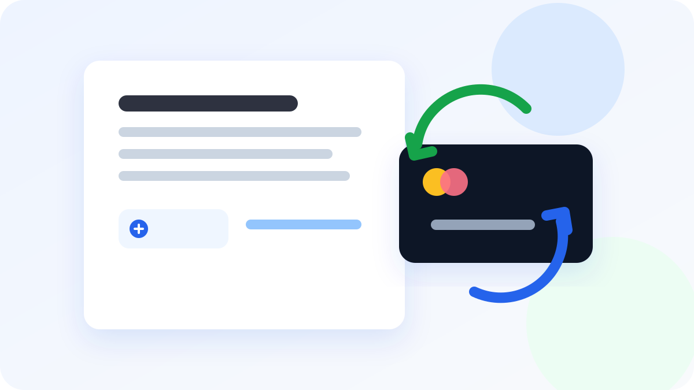

Возврат денег
Составить требование о возврате денег
Не начинайте с фразы «прошу вернуть деньги».
Подготовьте документы по оплате, опишите договорённость, причину возврата и то, чего вы уже добивались от второй стороны. Сервис бесплатно разработает черновик будущего требования.
План бесплатно · готовый текст — 390 ₽

После оплаты что-то пошло не так
Услугу не начали вовремя. Товар не передали. Заказ отменили. Предоплату обещали вернуть, но сроки постоянно сдвигаются.
В переписке это часто выглядит просто: «Верните деньги». Для официального требования этой фразы мало.
Нужно связать оплату, договорённость, произошедшее и конкретное требование в одну последовательность.
Например, внесли 60 000 ₽ предоплаты
Заказчик перечислил исполнителю 60 000 ₽ авансом. Работы должны были начаться 1 сентября. Старт дважды переносили, а затем исполнитель в переписке сообщил, что проект взять не сможет. Деньги обещал вернуть, но перевод так и не поступил.
Здесь есть основания: сумма, назначение платежа, согласованная дата старта, переписка о невозможности выполнить работу и обещание вернуть деньги.
Но для нормального требования ещё нужно точно указать, кто кому платил, по какому основанию, какую сумму нужно вернуть, куда перечислить деньги и какие документы подтверждают изложенные факты.
Сначала основание. Потом формулировка
Перед тем как писать текст, полезно собрать четыре вещи.
- За что были перечислены деньги. Товар, услуга, работа, бронь, аванс или другая договорённость.
- Чем подтверждается оплата. Чек, платёжное поручение, банковская выписка, счёт или расписка.
- Почему возник вопрос о возврате. Что произошло после оплаты и что уже обсуждали со второй стороной.
- Что именно вы требуете сейчас. Сумму возврата, реквизиты и срок, в который просите перечислить деньги.
Если чего-то не хватает, это лучше увидеть до того, как документ будет готов.
Что приложить к требованию
Не нужно загружать всё подряд. Добавьте материалы, которые подтверждают ключевые факты.
- договор, заказ, счёт или коммерческое предложение;
- чек, платёжное поручение или подтверждение перевода;
- переписку о сроках, отмене, недостатках или возврате;
- акт, уведомление или другие документы по ситуации;
- если деньги уже обещали вернуть — сообщение или письмо с этим обещанием.
«Сильный документ обычно строится не на длинных формулировках, а на короткой проверяемой цепочке фактов.»
Требование или претензия?
Название документа само по себе редко решает задачу. Важнее содержание: что произошло, на чём основано требование, какую сумму вы просите вернуть и что будете делать дальше, если вопрос не решится.
Если ситуация уже перешла в спор и нужно подробно зафиксировать нарушения, можно начать с общей страницы «Составить претензию онлайн».
Если задача проще — официально потребовать возврат конкретной суммы по понятной ситуации — эта страница подходит лучше.
Сервис собирает документ из ваших фактов
Опишите ситуацию обычными словами. Вам не нужны юридические формулировки.
Сначала сервис покажет бесплатный план требования: какие факты использовать, чего не хватает, как сформулировать требование и что к нему приложить.
Перед отправкой проверьте имена, реквизиты, даты, суммы и приложенные документы.
Сервис помогает подготовить проект документа и не заменяет юридическую консультацию. Для сложного спора, крупной суммы или специального регулирования может потребоваться профильный специалист.
Если задача немного другая
Соберите факты до отправки требования
Оплата, договорённость, причина возврата и документы — сервис превратит это в понятный проект требования.
Получить бесплатный планFAQ
Частые вопросы
Какие документы приложить к требованию о возврате денег?
Добавьте то, что подтверждает оплату и договорённость: договор, счёт, чек, платёжное поручение, переписку, акт, заказ или другие материалы по ситуации.
Можно составить требование, если договора нет?
Да. Опишите, о чём договорились, за что и когда заплатили, что произошло после оплаты и какие подтверждения у вас сохранились.
Это юридическая консультация?
Нет. Сервис помогает подготовить проект документа по вашим фактам. Для сложного спора, крупной суммы или специального регулирования может потребоваться профильный юрист.